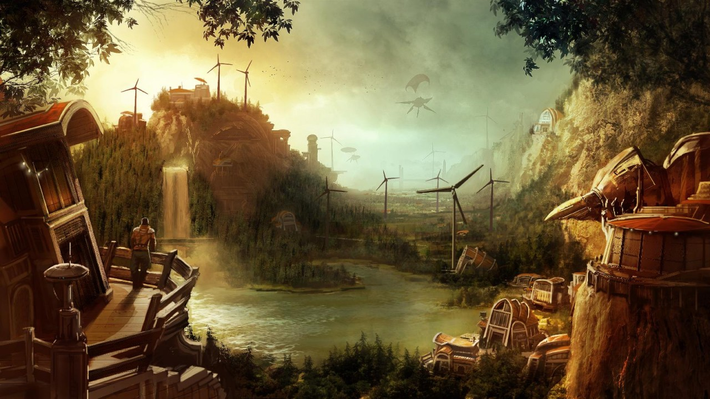

Über das Spiel
Anno 2070 erschien 2011 und wagte den Schritt in die Zukunft. Statt Mittelalter und Kolonialsetting standen nun Ökologie, Energieerzeugung und Technologie im Mittelpunkt. Das Gameplay drehte sich stark um Nachhaltigkeit und wirtschaftliche Effizienz.
Neue Mechaniken
- Drei Fraktionen: Tycoons, Ecos, Techs
- Umweltverschmutzung beeinflusst Wirtschaft
- Unterwasserbasen und Tiefsee-Gameplay
- Moderne Hochhausstädte

Einzigartige Atmosphäre
Trotz Zukunfts-Setting fühlt sich das Spiel typisch nach Anno an: Warenketten, Aufstiegsrechte, schöne Städte – nur alles futuristischer.